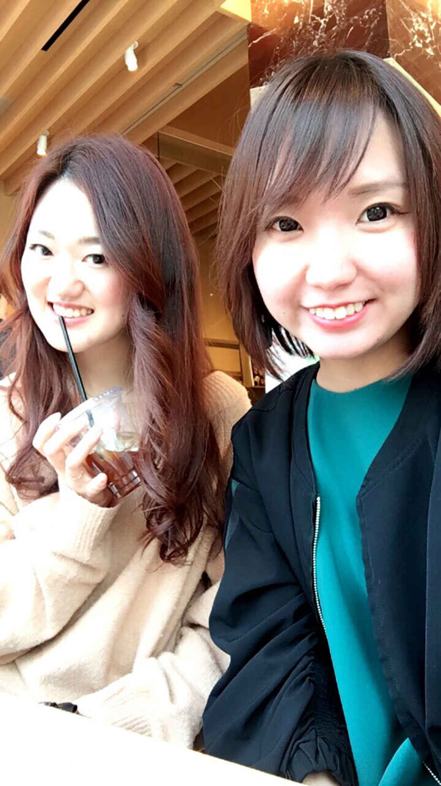
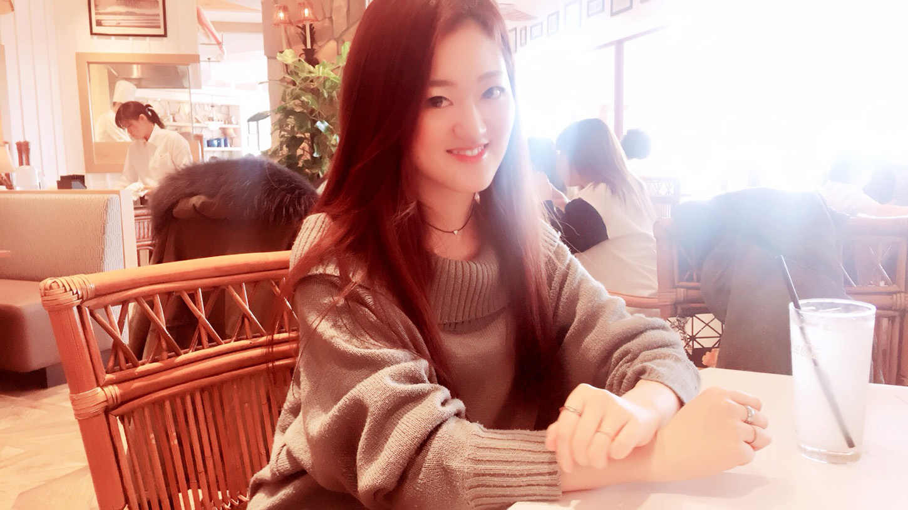

| お金も幸せも引き寄せるビジネスの始め方 〜第一歩にピッタリな物販のススメ〜 | |
| 宮﨑アヤコ | |
| Hitotsuku Publication (2018) | |
宮﨑アヤコ
あなたは「こうなりたい！」という将来のイメージを持っていますか？
「自由なライフスタイルがいい！」という人がいれば、「質素で素朴だけど、心が満たされている豊かな人生を送りたい」人、「世界を飛び回ったり活動的に生きたい」という人もいるはずです。
そう、『アタシライフ』は、一人一人違うものなんです。
私が会社を辞めて生きていこうと決めて、色んな方と出会って想像した「成功したらこうなりたい！」という姿は、華やかに自分らしく生きている、ギラギラじゃなくてキラキラしたオーラがあるかっこいい女性でした。
自分らしく、自由に生きたい。
芯のある、強い女性になりたい。
今は周りからそういう印象を持ってもらえているんじゃないかなと思います。
この華やかに自分らしく生きる『アタシライフ』を手に入れるまでの私は、個性が強いことや言いたいことを言ってしまう自分を押さえ込んでいました。ですが、あることがキッカケで、ありのままの自分で生きていけるようになったんです。無理しない、素のままの私で。
この本では、私とビジネスパートナーのななこさんの経験を通して、あなたが華やかに自分らしく生きる『アタシライフ』を叶える方法
についてシェアしていきます。
無理している自分、うまくいかない自分からは卒業しませんか？
私は母が韓国人ということもあって、昔から「韓国語を使った仕事に就きたい」と思っていました。韓国語を話せて。韓国人と関われるような仕事がしたいと考えて、１社目は空港の免税店、２社目は韓国の外資系企業の日本支社に勤めました。
仕事はとても楽しかったのですが、色んな挫折や失敗を経て、現在は華やかに自分らしく生きる『アタシライフ』をテーマに起業コンサルタントとして活動しています。
この章では、なぜ私が「やりたい」と思っていた仕事を辞めて、起業したかについてお話していきますね。
夢だった韓国語を使った仕事に就いたのに辞めてしまったのは、２社とも私にはすごく合わなかったから。
すごく堅苦しくて、素の私じゃいられなくなる感じだったんです。本当は周りに合わせないといけないのかもしれませんが、ガッチガチに固められたルールの中で仕事をすることは、私にはできませんでした。
１：未来の自分でもある"上司"が幸せそうではない
まず、人間関係。会社に勤めていると上司は、未来の自分の姿でもあると思います。
外資系の大企業だったので、役職が上がるごとに給料も上がるシステムでした。なので、私の上司はかなりの額をもらっていたと思います。ですが、上司はいつも不平不満ばかり口にしていて、出勤したらオフィスには悪口が飛び交っているような状態でした。
「そのままじゃだめだよ」といった風に人格を否定されたこともありました。私はかなり明るいタイプなのですが「明るくしちゃダメ」と言われたり、「お客様とコミュニケーションを取り過ぎちゃだめ」と言われたり、仕事のやり方や私の生き方を否定し、会社仕様へと強制されたんです。
それだけなく、そんなことを言ってくる上司自身が全然幸せそうじゃなかったんです。いつもため息ばかりついているし、毎日夜遅くまで仕事している姿を見て「あ、私もああなるのかな」と。「10
年後、20
年後でも人の上に立ったときに、あんな幸せそうじゃない人間になりたくない」とすごく思いました。
２：自由な時間がない
ただ普通なら「人間関係が合わないなら、転職しようか」と考えますよね。ですが、２社に勤めた時点で「私はもう会社員に向いてないな」と直感的に感じたんです。
雇われるのが向いていないというか、自分で自由に時間を使えないことがとても苦痛でした。
１社目の空港に勤めていた際は、ひどい時だと23
〜24
時に帰宅して、朝４時にまた出勤というサイクル。１日のほとんどが仕事で、休日は疲れて寝ているだけで、遊びにも行けない状態でした。２社目の大企業も夜勤や残業、出張がすごく多かったです。
「こんな自由な時間が全くない状態なんて耐えられない！」。そう思いました。
と、同時に「会社に縛られながら仕事をしなくても生きていくことはできないのかな？」と思い始めました。「会社に勤めていなくても、もっと自由で素敵な人生を送ることはできないのかな」と。
でも当時は、働かないで収入を得るのは無理だと思っていたので、我慢して会社に勤めて続けていました。
なぜそんな状況でも働こうとしていたかというと、私の家がすごく貧乏だったからです。小さい時から我慢していたことがすごく多くて。「これ買ったらお母さんは嫌がるかな」とか「これ食べたいって言ったら家計がもっと苦しくなっちゃうかな」とか、幼いながらに家のお金事情をすごく気にしながら生活していたんです。
現在の旦那さんと結婚してからは、「もし子どもが生まれたら、私の幼少期みたいな想いをさせたくない」とすごく思っているので、経済的にできるだけ裕福になろうとずっと考えています。
だから、なにかしら働いていないといけないし、もっともっとお金を貯めていかないといけないし、稼いでいかないといけない。
それが分かっていたので必死に仕事をしていたんですが、２社目で「もう会社勤めはできないな」と思う自分がいたんです。もうこれ以上、会社では働くことができないという想いがすごくあって、辛かったのを覚えています。
親孝行したい。旦那さんともっと幸せな家庭を作りたい。そういう気持ちはあるのに、会社に行けない自分がいました。精神的にも肉体的にも限界で、会社へ行って働くことに恐怖感を抱いてしまって、「会社員は私に合わない」と確信したんです。
ですが、すぐにそこから「起業しよう！ ビジネスをしよう！」となったわけではありません。
やってみたい想いはあったんですが、それよりも「もっと幸せな生き方ができないのかな」「普通の、なんかキラキラしてて楽しい人生を過ごせないのかな」という想いが強かったです。
多分10
代、20
代と一番楽しいときに、狭くて苦痛なオフィスに１日中閉じ込められている意味が分からなかったし、そこから抜け出したかったんだと思います。
苦痛すぎる会社員生活から抜け出したくてインターネットで検索をしていたとき、『引き寄せの法則』
というものに出会いました。簡単に言うと、自分の心や考え方が現実だけでなく未来にも反映されるというものです。
Youtube の動画を見ながら「自分の考え方や意識をもっともっと変えていくことが大切なんだな」とすごく気付かされました。『引き寄せの法則』を学びながら「私はもっと幸せになれる人間なんだ」、「もっと周りにいい影響を与えることができる人間なんだ」と自信が持てるようになり、経済的にも精神的にも豊かな人生を手に入れられるという確信も、なぜか持てるようになったんです。
それから今に至るまで、色んな方と出会えて色んなことを引き寄せたのは、『引き寄せの法則』を知ったことがキッカケだと思います。
経済的にも精神的にも豊かな人生を手に入れられるという確信が持てるようになってからは、雇われずにお金を稼ぐ方法を調べるようになりました。
最初に知ったのは、『ＦＸ』。勉強に何十万円も投資したのですが、相場にすごく流されてしまうことや軍資金が必要なこと、即金性がないことに気づき、一旦離れることにしました。「最初は低額から、小さなお金から始めていきたい」と思っていたのですが、ＦＸでは厳しいことに気づいたんです。
「もっと即金性があるビジネスをしたい」と考えていたときに出会ったのが、『ＭＬＭ』。ただ、当時は全く稼ぐことができず、ＭＬＭだけではなく起業をするにしてもビジネスに関する知識が乏しいことを思い知らされ「ビジネスについてがっつり学びたい！」と考えるようになりました。
そして出会ったのが、今のビジネスです。
バラバラに見えるかもしれませんが、全部引き寄せているなとすごく感じています。これまで１人も悪い人がいなくて、１人も変な人がいなくて、出会った人たち全てがめちゃめちゃいい人たちでした。
だから詐欺にあったり、ものすごい変な損失を出したりすることなく、７〜８ヶ月というものすごく短い期間で、雇われずにお金を稼げるようになったんだと思います。本当に、出会う人・関わる人によってお金を稼げて、豊かな人生を送れるようになるかが左右される
んだなと、実感しています。
そして、人生を豊かにするための布石となるような人と出会うためには、出会うであろう環境へ行くこと。つまり、今の環境を変える努力をしていかなければならない
ということに気づいたんです。
この気づきを得てから、私は常に「なりたいアタシはなんだろう？」と考えつづけ、色んな人に直接会って話を聞くようにしています。

色んな壁にぶつかりながら今に至った私ですが、ビジネスパートナーのななこさんも、今のビジネスを始めるまで紆余曲折があった女性の１人です。ななこさんの場合は「やりたい！」と思った仕事からシフトして、現在一緒にお仕事をしています。
この章では、ななこさんの事例も紹介しながら、起業やビジネスがうまくいくポイントについて書いていきたいと思います。
あやこ：
ななこさんは、どういう経緯で今のビジネスに行き着いたんですか？
ななこ：
高校時代にまで遡るんですけど、小さいときから「パティシエになりたい」と思っていたんですね。
あやこ：
へー、かっこいい！
ななこ：
ありがとう！ 私が小さいときに、母がケーキやお菓子をよく作ってくれていたのがキッカケなんです。
誕生日会とかみんなが集まる会をよく開いていて、その時に手作りのお菓子やケーキを出してくれて、友だちがすごく美味しそうに食べているのをいつも見てて。「私も将来母親になったときに、こんな風にケーキやお菓子を作って、周りを喜ばせたい」と思うようになって、「パティシエというか、ケーキを作る仕事は夢のある仕事だからなりたい」と考えるようになったんです。
それで高校も商業高校に進んだんだけど、卒業してから修行へ行ったりお店の立ち上げようとすると、結構お金が必要なんですね。フランス留学だと、１週間に60
万円とか。
あやこ：
かなりかかるんですね......！
ななこ：
だから「２年で１８０万円貯める」と決めていて、色々節約したりして実際に貯めたんです！
ちょうどお金が貯まったとき、私の製菓の知り合いで高校を卒業して、実際にパティシエをやっている子と話す機会があって。その子に仕事のことを聞いたら「４月に就職して、朝の５時くらいからケーキを作っている」と。そんな環境で、ひたすらケーキを作る。「理想や夢はあるけれど、私はそこまでしてケーキを作りたいのか」と考えてみたら、全然作りたくなくて。
あやこ：
せっかく１８０万円も貯めたのに!?
ななこ：
「そんな過酷な環境でやっていきたいのか」となったときに、純粋にやりたくないって。
一気に目標がなくなって、なにもやる気にならなくてボォーっとしちゃって、ダラダラ４年くらいそのまま工場で働いていました。人はよかったんで。ただ仕事は全然つまらなくて、「このままで本当にいいのかな？」という想いがどんどん強くなっていったんですね。
そんな想いを抱えつつ働いてたんですが、その時はすごく立ち仕事が多くて、足がすごくむくんでて、マッサージによく通っていました。そうしたらマッサージの人に、「ホットヨガは血行も代謝もよくなるからすごいオススメだよー」と言われて、スタジオに通うようになったんです。
通い始めたらすごいハマってしまって。すごい気持ちいいし、心もリラックスできて癒やされるし。先生もすごく魅力的に感じて、「自分もこうなれたらすごく幸せになれそうだな」と思い始めて。
でもその時の私は体が硬くて、人前で話すのもすごく苦手だったから「ヨガインストラクターになる！」と言った時は、みんなに反対されました。
あやこ：
そんなに体が硬かったんですか？
ななこ：
すごい硬かった。特に開脚ができなくて、背中が丸まるくらい。
あやこ：
私もなんで、分かります！ それでヨガインストラクターを目指すのは、確かに反対されそうですよね。
ななこ：
でも、やりたくて。だんだんと周りも諦めていって、工場で働きながら週に１回、朝から晩まで養成講座を受ける生活を半年間続けました。資格は無事にとることができて、インストラクターの面接を受けに行きはじめたんですが、どこも落とされて......。うまくいかなかったんですよね。
「好きだから仕事したいと思ったのに、全然できないじゃん」と。それで一か八かだったんですけど、養成講座の先輩がスタジオをいくつか経営されていたので、その方に自分の想いを綴った手紙を送ったんです。
あやこ：
かっこいいですね。行動力がすごい！
ななこ：
その人がやられているスタジオに応募をしてから、履歴書と手紙を書いて直接送って。そうしたら数日後に電話がかかってきて「レッスン見てみる？」って。それから色々あったんですけど、レッスンを持たせてもらえることになったんです！
業務委託という形での契約だったので、自分でもレッスンをやり始めました。スタジオを自腹で借りて、集客して、カードを作ったりヨガマットを揃えて......。全部自分だけで。
ただやってみたら、お客様管理もお金の管理もすごく大変で、スタジオ代の方が高くなって売上がマイナスになったり、借りたけど集まらなくてスタジオに１人だったこともあるくらい。
あやこ：
うう、つらいですね。
ななこ：
好きなことを仕事にするのは、すごいマイナスな部分も多いことに気づけたんですよ、その経験で。実際、ヨガインストラクターは好きな仕事だったけれど、嫌いになりそうになりました。
人間関係もあるけれど、それ以上にうまくいかないことで大好きなものが嫌いになりそうになる。今の状態をすごく嫌だと感じつつも「これをするしかない」と思って、自分でレッスンをするのも続けてました。ヨガインストラクターの方が、６〜７万円しかもらえてなかったし......。
あやこ：
え、１ヶ月ですか？
ななこ：
そうなんです。そこまでスタジオ数がなかったので仕方ないと思っていたし、だからこそ「自分でやってやろう」と思ったんですよね。
ですがヨガインストラクターだけじゃ生きていけなかったので、体を動かせる仕事を探してスポーツクラブで働き始めました。朝から夕方まではスポーツクラブ、家に帰ってごはんを食べて、また１時間くらいかけてスタジオへ行って２レッスンして、帰宅。家に着いたら23
時みたいな生活が週６だったんですね。
あやこ：
ヤバ......、休みなしですね。
ななこ：
いや、一番辛かったのは、体を動かしすぎて体調を崩したこと。
あやこ：
逆に!?
ななこ：
スポーツクラブへ行くのは電車だったんですけど、スタジオや自分がレッスンをもっている方へは車で通勤していて。毎回、家に一回戻らないといけなかったんですね。だから仕事以外でもめちゃくちゃ動いてたんです。
そうすると、疲れから風邪引いたりとか......。会社員だったら休めばいいと思うんですけど、所属しているスタジオのレッスンは自分の枠があったんで、休むことができないんですよ。休むときは誰かに代行を頼んだりするんですけど、すごい気を使うし......。
だからムリヤリ出て、レッスン中に咳き込んだりとかしてて、それがすごい嫌だったんですね。それで、スポーツクラブとインストラクター合わせて17
万円前後とか。
あやこ：
最悪ですね......。
ななこ：
そこから自分で保険料を支払ったりしないといけなかったんで、会社員やってる方が全然よかったんですよね。だからこのままの生活を２〜３年続けるのかと思うと、憂鬱で......。
「どうしよう」っていう不安はすごいありましたね。生活がギリギリだから貯金もできないし、でもヨガはやめたくない。だから体を動かさなくて、なおかつ稼げる仕事をと思って色々検索して、今のビジネスに出会ったんです。
だから好きなことを仕事にする難しさを感じたことが、このビジネスをしようと思ったキッカケなんですよね。
あやこ：
私もそうなんですけど、やっぱり幸せになりたいじゃないですか、人間て。一度っきりの人生だし、ななこさんも幸せになりたいからヨガをやられていたんですよね？
私は親が韓国人なので、自分の中で韓国語はものすごい大きな武器だと思っています。だから韓国語を使って仕事がしたくて、空港で働いたし韓国の大企業に就職もしました。
でも「好きを仕事にする」のはすごく大変で、経験を積まないといけないし、やらないといけないことがたくさんあるんですよね。
私だけでなく、「実際に好きを仕事にしてみて、好きなことも失敗などの壁があると嫌いになりそうになることを実感した」と、ななこさん。
好きなことを仕事にし続けて、自分らしい生活を送るために、私もななこさんも今のビジネスを始めます。それは『物販』です。
なぜ、物販を選んだのか。この章では、初心者の方が始めるビジネスとして物販がいい理由をご紹介していきます。
ななこ：
好きなことをするときは、お金を稼ぐこととは別でやる形にしたらすごくいい
と思うんです。お金を稼ぐことはビジネスとしてしっかりやって、自分の好きなことはお金を考えずにする
。それがすごくいいんじゃないかなって。
あやこ：
なるほど。私の場合は、ゆくゆくは好きなものとビジネスを直結できたらいいなと考えていて。
〝稼げるもの〟と〝稼ぎたいもの〟は違うじゃないですか。だから最初は稼げるもの、ちゃんとお金になって食べていけるもので経験を積んでいって、ゆくゆく韓国語を使ったビジネスに発展させることができればと考えています。韓国もすごい就職難なので、そういう人の助けになりたいし、そのための一歩として、このビジネスを始めたというのもあるんですよね。
会社も人間関係も辛いし、「私、ここの会社は合っていないんだろうな」という想いもありましたけど、「自分のやりたいことをもっとやるために、会社を独立したほうがいい。もっと楽しくて、もっと面白い人生になるかな」という想いの方が強かったですね。
ななこ：
すっごい分かります。
あやこ：
でも実際にやってみると、結構つまづきません？
ななこ：
好きなことを仕事にってこと？
あやこ：
好きなこともそうですけど、お金を稼ごうとしたらですね。私は独立をして色んなことやって、うまくいかないことがすごくあって。
１：お金になるまで時間がかかる「ＦＸ」
ななこ：
なに、やってきたんでしたっけ？
あやこ：
まずは、ＦＸですね。今もやっているというか勉強はしてて、もっとお金が貯まったらもう一回やりたいなと思っています。最初に勉強代として50
万円投資していますし。
１ヶ月に何百万と稼いでいる方も実際におられて、そういうイメージもすごく強いんじゃないかなと。でも、やっぱりそういう人はものすごくわずかなんです。
ＦＸには即金性がないんですよね。基本的に習得するまでに半年、早くて３ヶ月。長いと半年〜１、２年と長くかかってしまいます。そんな中で食べていかないといけないわけじゃないですか。もう会社員にも戻りたくなかったですし、半年も１年も待てないというのがすごくあって。
ＦＸはお金を増やすやり方で、お金を稼ぐ方法じゃないなって思ったんです。
ななこ：
元々、資金がある人に向けてだったらいいってこと？
あやこ：
そうですね、元々資金に余裕があったり、収入源が既にあってサブみたいな感じだったりでＦＸを運用するのはいいかもしれません。ですが、会社を辞めて最初の第一歩にＦＸというのは、私には合わなかったんですね。
最初からＦＸをやって成功したという方もいると思うので、一概に「これが駄目」とは言えないんですけど、私の場合は最初にＦＸは違いました。
２：営業力がいるし向いていない気がした「ＭＬＭ」
あやこ：
その次に、知り合いから「新しいＭＬＭの事業が始まるから一緒にやってみないか」と誘われて。
今まで営業のアルバイトをしたこともあるんですけど、営業力もないし、営業するのも嫌いだったんです。商品がどれだけ良くても、知らない人や友達に紹介するのにすごい抵抗があって......。
ななこ：
そうですよね。
あやこ：
だからＭＬＭも向いてないなって。でも営業力を身につけたら強いなとも思ったんです。
これから起業して自分でビジネスをしていくためにも、もっともっと自分を成長させるためにも、営業を学びたいという想いがすごくあって。
今のビジネスにたどり着いたキッカケでもある感じですね。
ななこ：
実は元カレが、ＭＬＭをやっていたんですよ。
あやこ：
え!?
そうなんですか？
ななこ：
その時から、あんまりいいイメージがなくて。なぜか、すごいＢＢＱに行くんですよね。
あやこ：
ＭＬＭで？
ななこ：
ＢＢＱしながら交流することで、まず信頼関係を築く。その後に「この商品いいよ〜」と、商品説明をして買ってもらうみたいな流れだったんです。
でも、私は自信を持って勧めることができなくて......。商品の種類が多いのはすごくいいなと思ったんですけど、そこの化粧品が私には合わなかったんですよね。だから......。
あやこ：
化粧品やサプリは人によって、合う・合わないがありますもんね。
ななこ：
そうなんです！ だから合わないかもしれないのに、友達とかに勧めたりするのは「なんか違うんじゃないかな」って。
あやこ：
ＭＬＭは、インターネットやＳＮＳで広告をうてないし、「この会社で営業をしています」と大々的に出すことが禁止されているそうなので、身近な人にしか伝えられない。
だから、商品が本当に欲しい人が集まるというよりも、身近な人に「こういうのがあるから一緒にやらない？」みたいな勧誘のイメージが強いと思います。
でも私はＭＬＭもＦＸも今のビジネスも、悪いものとは思っていません。結局、手段じゃないですか。
その手段が自分に合わないから、結局ビジネスで失敗している人がすごく多いんですね。だからどのビジネスをやるにしても、全然問題ないと思います。ＭＬＭも悪いと思っていませんし、その人にとってＭＬＭがもしかしたら人生逆転の一手かもしれなくて。ただ私には合わなかっただけなんですよね。
ななこ：
私も......。別に悪いものだとは思っていないんですけど、ただ全部がいい商品ではないし、価格も「この値段が妥当だよ」と言われても私はそう思わなかったりしたしね。だから、私には合わないかなって。
あやこ：
そこは個人差ですよね。
あやこ：
多分「起業したい」「独立したい」と思っている人は、すごくいっぱいいると思うんですけど、自分にどの手段があっているかわからないですよね。
もしかしたらＦＸを始めたら２ヶ月でいきなり何十万円と稼げる人かもしれないし、ＭＬＭをコツコツやって１年後に毎月不労所得が得られる人かもしれないし。色々と押さえておかないといけないことはあると思います。
１：最初に資金が必要でない
ななこ：
ＭＬＭはまた違うかもしれないんですけど、ＦＸは最初に資金が必要だったりしますよね。
あやこ：
ＭＬＭもＦＸも、最初にお金が必要ですね。ＦＸはある程度まとまった軍資金がないと、お金は増えないですし、ＭＬＭはその商品を買わないと自分にお金が入ってこない場合や、最初に登録料を払わないといけない場合がありますし......。
私が今やっているビジネス以外は、最初に資金がめちゃめちゃ必要なイメージです。ななこさんもさっきヨガで資金のお話されていましたよね。
ななこ：
そう、実際に自分でやっている時に思ったのが「自営でやっていくのは本当に難しい」ということ。ある程度のベースが必要ですし、しかも成功するか分からない。
「成功するために真似をしろ」と言われていますけど、私の場合は真似をする人がいなかったんですよね。だから余計に難しかったです。
あやこ：
「営業力を学びたい」と思って、何十万とお金を投資するのはいいと思うんです。ＦＸの勉強代とか。そのお金が、自分の成長につながるじゃないですか。
だから勉強代として払うお金はオッケーだと思いますし、ものすごくいいと思います。私はＦＸをやったことも、ＭＬＭをやったことも成長できたから全然後悔していません。
でも学んだことで食べていけるかは、また別の話じゃないかなと私は考えています。ＦＸをするために軍資金が何十万円必要だったり、ＭＬＭの商品を買うために何万円払わないといけないだったりは、失うお金、なくす可能性があるお金です。
だからビジネスの初心者ならば、リスクがあるものは避けた方がいいんじゃないかなと個人的にすごく思います
。
２：再現性が高く、誰でもできる
ななこ：
本当になにも残らないですし。特に女性は、ビジネスに苦手意識のある方が結構多いと思うんです。私も実際そうで。
私が最初にこのビジネスを始めたとき、全然パソコンが使えなかったんですよね。エクセルとワードもできなくて、本当になにも分からない状態からスタートして。
それでも色んな方に助けてもらって、今のビジネスで初月から稼ぐことができたんです。
あやこ：
いくら稼げたんですか？
ななこ：
私たちがやっているビジネスは物販で、「安く仕入れて、高く売る」という仕事をしていますけど。先程話したように全然時間がない中でも、19
万５，０００円稼げたんです（自己アフィリエイト含む）。
あやこ：
初心者がいきなり19
万円はすごいですね！ なかなか稼げないです。ＦＸやＭＬＭじゃ無理だと思います。
ななこ：
２ヶ月目はスポーツクラブを辞めて時間ができたこともあって、12
万円くらいは稼ぐことができました。３ヶ月目は20
万円、４ヶ月目は16
万円、５ヶ月目は50
万円までいったんです。
パソコンじゃなくてスマホしかなくて、自分自身になんのスキルもない状態でもやってみたら、稼ぐことができて。継続的に、コツコツやれば稼げるのが分かったんです。
すごく簡単に出来たわけではないし、何度も壁にぶつかったことはあったんですけど、乗り越えることができました。それは、物販のコミュニティに入って、講師の方のサポートや仲間の支えがあったからです。稼いでいる人に会って学んだり、環境の力を借りるのも結構大事だなぁと。
あやこ：
それは本当にそう思います。私も物販のコミュニティに入ったからこそ、今こうして稼げるようになりましたからね。
ななこ：
パソコンすら持っていなくて、ビジネスに関して初心者な私でも、物販はできたんです。
だから、本当に今悩んでいる人や「好きなことで起業したい」「独立したい」と思っている方は、まず物販からやってみてほしいなと。
あやこ：
物販は、さっきななこさんが言われていたように再現性がとても高い
じゃないですか。「やろう」と思う気持ちと「やる」という行動力さえあれば、誰でもお金が稼げるビジネスなんですよね。
しかも初期投資がかからなくて、即金性もある
。正直、商品さえ売れれば３日〜１週間後には利益になるので、生活費にも困りません
。
ＦＸは出金や入金にすごい時間がかかるんですよ。扱う銘柄や銀行にもよるんですけど、すごい時間がかかるし、相場にすごく左右されてしまうのでなかなかお金になりにくいところがあって、「それで生活できるか」と言ったら結構キツイ部分がありました。
でも、今やっている物販ビジネスはすぐお金になるし、本当にパソコンさえあれば誰でも稼げるんです。結構、年配の方もされていますよね？
ななこ：
インターネット環境があって、クレジットカードを持っていれば誰でもできますからね。最初に資金がある人はいらないんですけど、ない人はクレジットカードがあると確実です。
それさえあれば誰でも稼げてしまう。そんなビジネスは、なかなかないんじゃないかと。セミナーなどに行くと、結構年配の方がおられてたりして「おお、すごい！」となりますし。
あやこ：
利益を出されているからこそ、セミナーに参加できたりするんですよね。多分、年金などの不安があって始められて、結構稼いでおられる感じですよね。
ななこ：
うんうん。
あやこ：
すごくいいなというポイントは他にもあって、ＰＣとネット環境は大事なんですけど、場所にとらわれない
。
ななこ：
本当にどこでも出来る。私の知り合いだと海外でやっている人がいて、本当に自由だなと。自由で豊かで、場所に囚われない。
あやこ：
年齢も場所も問わないビジネスはなかなかないので、そういう意味では本当にこのビジネスに出会えてよかったと思います。だから何回も言っていますが、今まで会社辞めたりＦＸやＭＬＭをやってみたりしたことは、私の中で今にキチンと繋がっているんです。
起業しようと思って、私みたいに色んなことをやっているんだけど、なかなかうまくいかない人は多いと思います。例えばＭＬＭをやっているけどなかなかお金にならなくて、「このままで大丈夫なのかな」だったり、「本当にこのビジネスがあっているのかな」という人はすごくいると思っていて。
どれもただの手段ですし、稼げてもやっぱり即金性がなかったら、食べていけなくて苦しくなっちゃうんだから意味がないと思うんですね。諦めないでやっていくこともすごく大切なんですけど、どれを選択するかはすごく大切だと思います。
自分に合う選択をしっかりする。正直、ＦＸやＭＬＭをやりたかったら、またお金が稼げるようになってからやればいいじゃないですか。
まずビジネスの初心者は、お金を稼ぐことを学ぶのが一番大切だと思うんですよ。だから、なるべく早くお金が稼げるもので、「本当に会社じゃなくてもお金って稼げるんだな」というのに気づいてほしいんです。
本当にインターネットだけでお金を稼ぐことができる。別に悪いことじゃなくて、しっかり稼ぐことができるんだということを知ってから、ＦＸやＭＬＭをやった方がすぐに成功するんじゃないかなとすごく思いますね。
物販をすることが、そのキッカケの第一歩になってくれたらすごく嬉しいです。

ですが、初心者でも稼げるビジネスを選んでも、必ずしも成功する訳ではありません。成功するためには、大切なことがあります。
そのポイントを押さえることで、華やかに私らしく生きる『アタシライフ』をいち早く手に入れることができるのです。
ななこ：
私自身、このビジネスを始める前にちょっと気になっていたものがあったんですが、私はそれを結局やらなくて。
なぜかっていうと、人なんですね。
あやこ：
人？
ななこ：
人がすごくギラギラしてたんですよ。それが自分に合わない感じで。
あやこ：
今やっているビジネスの仲間は本当にいい人ばかりだし、仲いいもんね。
ななこ：
今のビジネスのコミュニティは、入ってみたらすごくアットホームで、親しみやすかったんです。でも最初に気になったところは、すごくギラギラしてて......。
あやこ：
こわいですね。
ななこ：
「怪しいんじゃないか？」という疑いがすごく出てきちゃったんですよ。そこでうまくいっている人はうまくいっていると思うんですけど。
だから初心者がビジネスを始める時は、実際にやっている人をちゃんと見てから、これを始めていいか判断するのがいいんじゃないかなと思います
。
あやこ：
うん、すごく大切です。
ななこ：
「騙されたー」とか「詐欺だー」とか、インターネットを使ったビジネスはそういうイメージもありますよね。多分そう言っている人は、悪い人に出会ってしまっただけなんです。
ちゃんと人を見定めさえすれば、騙されたりすることもないのではないかなって。
あやこ：
おっしゃってる通りで、正直怪しいビジネスも世の中たくさんあると思います。色んな広告を見て、「これ本当かな？」と思うこともめちゃくちゃあるし。
結局はやっぱり人がすごく大切だなと思いますし、入って騙されたとしても人のせいにしないでほしいです。だって、それを選んだのは自分じゃないですか。だからそれを理由にしてビジネスをやめてしまうんじゃなくて、それをキッカケにした別の出会いが絶対にあると思うから、次につなげて欲しいとすごく思います。
１度の失敗や騙されたことで、会社員やアルバイトに戻ってしまうんじゃなくて、それをバネとしてまた飛躍してほしいんです。私自身、飛躍してここにいますし。
誰でも失敗するんですよね。なかなか成功しないこともあるし、実際どんなに「すごい人だな」「私もこの人みたいになりたいな」と思う人でも、みんな失敗しています。最初の１年２年がうまくいかなかった人の方が多かったりしますしね。
ななこ：
だから、諦めていない人が残っている
感じですよね。途中で挫折する人がすごく多いので、まず挫折しなければいいのかなって。
あやこ：
挑戦して、ちょっとお金がなくなっても別に死ぬわけじゃないし、自分の身体に傷が残るわけでもないですもんね。
私はお金がないけど、勉強代などにトータルで１００万円くらい、少しずつ投資していたんです。自分のために。正直、家賃が払えなくなりそうなときもありましたけど、結局生きているし、死んでないし、なんとかなっています
。
だから、続けることや挑戦することを恐れないでほしいですよね。
ななこ：
本当にそうですね！ なんでこの話をしたかというと、以前交通事故にあって、「打ちどころが悪かったら即死してた」と言われたんですよ。今は無事にこうやって仕事をしていますけどね。
そのときに「一瞬の行動や状況で死ぬ可能性が、いつでもあるんだな」って感じたの。だから今日死んでも明日死んでも後悔しないよう、やりたいことに挑戦してみようという考え方になったんです。この経験がなかったら、もしかしたら今のビジネスはやっていなかったかもしれません。
あやこ：
本当に今、ななこさんのお話でもあったように、正直１時間後に生きているかわからないじゃないですか。大地震がくるかもしれないし、富士山が爆発するかもしれないし（笑）。
ななこ：
そうそう。だからいつ死ぬかも分からないのに、自分のやりたいことにチャレンジせずに生きてていいのかなと。
あやこ：
そう思います。人って常に行動して、チャレンジしていくからこそ、ステキな人生を送れるんですよね。
もちろん失敗もあるけど、逆に失敗のない人生は人生じゃないと思います。だから、どんどんチャレンジしていく人が増えたら嬉しいです。
ななこ：
うんうん！ 特に女性は、旦那さんやお子さんを理由に、やらない選択をする人が多いけど、これからは女性はもっと独立していってもいいと思うんですよ。
あやこ：
もちろんですよ。むしろ、自分で稼ぐ力を身に着けるべき時代だと思いますね。これから日本は、どんどん貧富の格差が広がって、金銭的に厳しい時代がくると言われています。だからこそ、男女関係なしに稼ぐ力は必須ですよね！
ななこ：
自分で稼ぐ力を身につけるのは、本当に大事です。
「パートやアルバイトもあるから大丈夫」という人もいると思うんです。でも今は、大企業でいつリストラされるか分からないですし、いつ潰れるか分かりません。
「人工知能が発達してきていて、49
％
の職業がなくなってしまう」というニュースも先日流れていましたし、「そこにあなたの仕事が該当しないと言えるんですか？」というところで。
それであなたが職を失って、何もなくなった時に「パートやアルバイトを探したい」と思っても、多分そういう人は世の中にすごく溢れてしまうんじゃないかなと。能力があるのに、仕事先がない。そういう環境になってようやくビジネスをしなきゃとなっても、すごく手遅れだと思うんです。
あやこ：
なんでもそうだと思うんですけど、早く行動したほうがうまくいく可能性が高いですよね。その時になったら、みんな思っていることは同じですし。
ななこ：
実際、そういう状況の時は自分のことでいっぱいいっぱいで、お金もなくて余裕もないと思うんです。だから、少しでも余裕があるときに積極的に学ぶことで、５年後、10
年後、20
年後なにかしらに活かされていくと思います。
あやこ：
日本人は本当に危機感がすぐなくなると思っていて。東日本大震災が終わって、ほとんどの人が備蓄したり防災セットを買ったりしたと思うんですけど、今は特になにもしてないと思うんです。
だんだん流されてっちゃうんですよね。それでまた地震があったら準備するじゃ、手遅れになる可能性が高いじゃないですか。
だから常に危機感を持って行動していかないと、いつ何がどうやって起きるか分からないので、行動力はすごい大切だなって思います。
ななこ：
キレイにうまくいっている人は本当にわずか！ 結構みんな挫折したり苦労したりして、それを乗り越えている人が稼いでいる人だなと思っていて。
私たちのやっているビジネスは、他のビジネスより全然ハードルが低いし、ここが出来なかったらほかもできないんじゃないか、というくらいのレベル
じゃないですかね。だから、とりあえずこのビジネスをやってみて続けて、好きなことや元々やっていたことに移っていくのがいいんじゃないかと思います。
あやこ：
最初から成功する人は本当にいないので、少しずつ自分のペースに合わせてやっていく方が、自分のためにもいいですよね。
それだけでなくて「これがやりたい！」というものがあったり、「お金をまず稼ぎたい」というのがあるんだったら、早めに成功している人の近くにいくのがいい
かなと。
ななこ：
行動を早く起こすことが大切ですよね。
あやこ：
あと、自分じゃ分からないことが、ビジネスを始めるといっぱい出て来ると思うんです。そうなった時に１人で考えるんじゃなくて、ちゃんと聞く。
アドバイスをもらって、実践するを繰り返していくのがうまくいくコツだし、幸せや自分らしい人生を送ることにもつながる
と思うんですよね。
ななこ：
教わる人がいて、さらに仲間がいるともっといいですよね。そういうすごく成長できる環境は、なかなかないんですけど。
限られていますけど、うまくそういうところへ入れたらものすごく成長にもなるし、それ自体が素晴らしい投資になるんじゃないかな。ビジネスの成功にもつながりますし！
ビジネスを始めたり、行動を起こしたりするのは、早ければ早いほどいい
です。それを知った時に、１分でも１日でも早く学んだ方が、その分だけすごく成長するし、知識の幅も広がっていきます。
このことに少しでも早く気づいて、自分で行動を起こしてやろうとしている人はすごくかっこいいと思うんです。やってみて失敗して諦めてしまう人はすごく多いと思いますが。
私は『プロデュース１０１』というアイドルになりたい練習生たちが集まって、訓練を受けるという韓国の番組が好きなんですが、そこで歌手のＢＯＡさんが言っていてすごく響いた言葉があるんです。
とある練習生がＢＯＡさんに「寝ないで一生懸命練習しているのに、オーディションや本番では失敗してしまって、夢に近づけている気がしない。正直、自分は歌もダンスもうまくないから、諦めたくなることがあります。どうすればいいか分からないです」と質問したんですね。
これにＢＯＡさんは、こう答えたんです。
「この世界は、過程より結果を重要視する世界なんですよね。本当に歌手になりたいならば、血が出るくらい努力してほしいです。努力は絶対に裏切らないんです。でもあなたが、夢を掴もうとしているその手を引っ込めてしまったら、誰もあなたの手を掴んではくれないんですよ」
結局、去るものは追えないというか。本当に夢を叶えたければ、どんなに辛いことがあっても、絶対その手を離しちゃいけません
と言っていて。
ビジネスが成功するまでにすごい時間がかかる方もいらっしゃるじゃないですか。でも辛いから、お金がないから、大変だからと、その手を引っ込めてしまったら、誰も掴んでくれないんですよ。諦めたら諦めたで終わっちゃうので。
ですが、手を引っ込めてしまう人があまりにも多いから、なかなかビジネスに対する偏見も多くなってしまいますし、嫌だなと感じることも多いと思うんですけど、最後まで諦めないでほしいんです。
どんなに大変でもその手を出し続けたら、いつかは乗り越えられて成功できるし、お金も稼げるようになるんじゃないかなと。だから手を出すことを諦めないでほしいし、少しでも成功やチャンスと繋がることができたのであれば、ずっと掴んでてほしいと思います。
掴んでいたら、必ず華やかで自分らしく生きる『アタシライフ』を引き寄せることができるはずだから。
お金を稼ぎたい、ビジネスで成功したいという方は、ぜひ私のＬＩＮＥ＠
にご連絡ください。ささいな悩みや相談でもいいので、連絡してきてほしいのです。それが、あなたの人生が変わるキッカケになるかもしれないですし。
最後に、ビジネスパートナーのななこさん、私を温かくサポートしてくださっているコミュニティの皆さまに、いつも刺激を与えてくれる仲間のみんな。そして、これまでどんなことがあっても私を見守ってくれた両親に感謝を込めて。本当にありがとうございました！
タップしても登録できない方は、「@fra9374b」でＩＤ検索して友達追加してください。（初めの＠ をお忘れなく）
宮﨑 アヤコ
１９９３年、東京生まれ。
日本人の父と韓国人の母を持ち、現在は韓国人の旦那と都内で暮らしている。
語学を生かした仕事に就きたく留学をし、２０１６年、大学卒業後には羽田空港と韓国の大手企業を経験。
２社の会社を経験し、会社や常識に縛られた生活はしたくない。
会社に通わなくても経済的・精神的豊かさを手に入れたく、インターネットビジネス・投資の世界に足を踏み入れる。
８か月の挫折・借金・苦悩の日々を過ごすも、絶対に家族を幸せにし、成功するという気持ちで現在のビジネスに出会い、多くの人へ人生を変えるキッカケを与えている。
今では副業コンサルだけでなく、起業コンサル・人材教育など様々な分野へ事業を拡大している。
タイトル お金も幸せも引き寄せるビジネスの始め方 〜第一歩にピッタリな物販のススメ〜
発行日 ２０１８年４月20
日
著 者 宮﨑アヤコ
本書の全部あるいは一部をコピー、スキャン、デジタル化する無断複製は、著作権法上での例外である私的利用を除き禁じられています。本書を代行業者等の第三者に依頼してコピー、スキャンやデジタル化することは、たとえ個人や家庭内での利用であっても一切認められていません。
©２０１８ Ayako Miyazaki